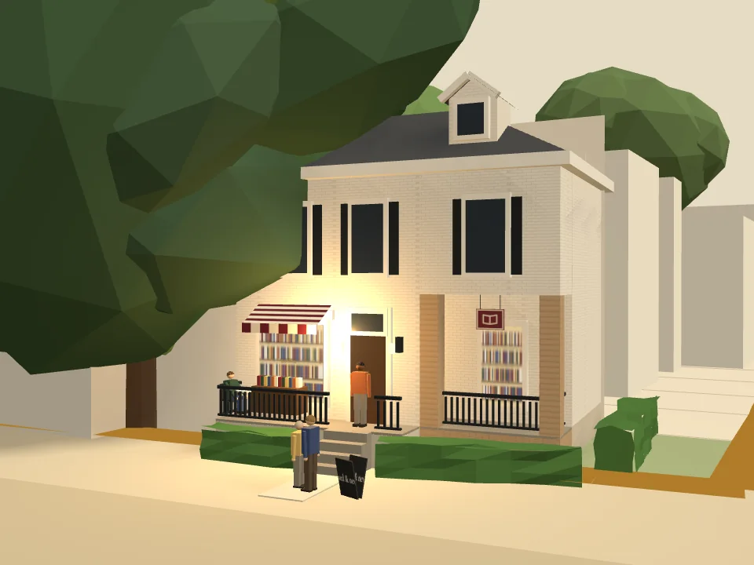

Case Study · Colonial Avenue
715 Colonial Avenue
A brick house whose porch could seat a café. Built 1888: 3,759 sq ft of living space on a 3,063 sq ft lot.

Case Study · W Princess Anne Road
740 W Princess Anne Road
A 1919 apartment building with porches stacked four high, and a shop on its first floor under the apartments.

Case Study · Colley Avenue
1012 Colley Avenue
The end house of a row, whose front room could hold a bookshop. Built 1908: 2,028 sq ft of living space on a 1,149 sq ft lot.
These are illustrations, not proposals for these properties. The photos are the City of Norfolk Real Estate Assessor's; the facts are from the City's FY2026 assessment.